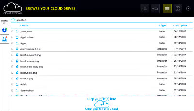

A free customizable file browser and a
self hosted node.js API
To manage your users' cloud services
from your application.
Self hosted
Cloud Explorer is free and open source, so you can host it anywhere, even for free on Heroku.
Simple to use
Cloud Explorer is very simple to set-up in your app. And also straightforward for your users.
Full control
A powerful API on client and server sides. Have full control over your users' data.

Your users deserve to own their data
You need to take control over cloud services
Cloud Explorer's javascript API is very simple to use
ask the user to choose a file or folderread and write to the user's filesupload files